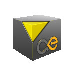
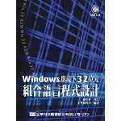
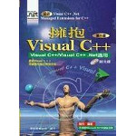
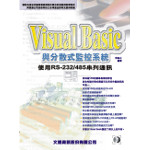
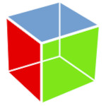
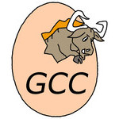
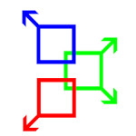

OpenCV
⊕ C/C++
∗ 開發環境
∗ show mp4
∗ show image

Hildon⊕ C/C++
∗ 開發環境
SDL
⊕ SDL 1.2
⊕ C/C++
⊕ Basic
∗ 安装環境
∗ Hello, world!
∗ SDL_PollEvent
⊕ Assembly (x64)
⊕ Basic
∗ 安装環境
∗ Hello, world!
⊕ Assembly (ARM)
⊕ Basic
∗ 安装環境
∗ Hello, world!

MASM32∗ 安装環境
∗ Hello, world!
MinGW
∗ 安装環境
∗ Hello, world!
∗ URLDownloadToFile
∗ 解決"undefined reference to HidD_GetHidGuid(_GUID*)@4"問題

Visual C++⊕ Console
∗ volatile
∗ UTF8轉BIG5
∗ extern "C"
∗ &&、&、||、|
∗ 顯示倚天中文字型
∗ 交換變數(無需暫存變數)
∗ 為何變數要使用兩個!!符號
∗ declaration、definition
∗ (y*3.14)、((y*314)/100)、((y*201)>>6)
⊕ GUI
⊕ Win32 API
∗ 開發環境
∗ Hello world!
∗ Drop File
∗ CPU x86/x64
∗ 分析USBView
∗ System Timer
∗ Screen Capture
∗ OutputDebugString
∗ MakeSureDirectoryPathExists
∗ GetKeyState、GetKeyboardState、GetAsyncKeyState
∗ FILE_FLAG_WRITE_THROUGH、FILE_FLAG_NO_BUFFERING
∗ 解決"LNK1112: module machine type 'x64' conflicts with target machine type 'X86'"的問題
⊕ MFC
∗ 開發環境
∗ Hello world!
∗ Wow64
∗ Memory Leak
∗ Unroll for、while
∗ CScrollView Dialog
∗ 解決執行管理權限的問題
∗ 解決無法自動顯示函數的問題
∗ 解決"mspdb60.dll Error Messages"問題
∗ 解決"mspdb80.dll Error Messages"問題
∗ 解決"cannot open file: afxcontrolbars.h"問題
∗ 解決"error C2065: ifstream : undeclared"問題
∗ 解決"_GUID_DEVINTERFACE_USB_DEVICE"問題
∗ 解決"Internal error during IncrBuildImage"問題
∗ 解決"warning D9028: minimal rebuild failure"問題

Visual Basic∗ ByVal 0&
∗ DoEvents
∗ AddressOf
∗ On Error Goto
∗ 刪除元件陣列
Qt
∗ Hello, world!

Gtk⊕ C/C++
∗ Hello, world!
⊕ Assembly(ARM CPU)
∗ Hello, world!
Python
∗ MySQL
∗ MongoDB
∗ Walk Directory
∗ Google Translator
∗ 取得Command Line結果
∗ 取得Process記憶體使用量
∗ 下載Google Drive的檔案
∗ 上傳ZIP檔案到Google Drive
∗ 取得Google Drive的檔案列表
∗ 解決"This file has been identified as malware or spam and cannot be downloaded"
⊕ PyGtk
∗ hello, world!

GCC⊕ C/C++
∗ Hello, world!
∗ zip compress/decompress
∗ lz77 compress/decompress
⊕ Assembly (ARM)
∗ Hello, world!
⊕ Assembly (x64)
∗ Hello, world!
∗ HOME目錄
∗ System Signal
∗ Macro反相參數(ARM)
∗ Label in Assembly
∗ GNU ARM Reference
∗ Macro invoke (x64)
∗ Macro invoke (ARM)
∗ x64 Calling Convention
∗ GetPrivateProfileString
∗ (Makefile) .PHONY
∗ (Makefile) EXTRA_CFLAGS
∗ (Makefile) =、:=、?=、+=
∗ 解決"EXPORT_SYMBOL: undefined"問題
∗ 解決"...not support ARM mode 'umaal..."問題
∗ 解決"cppopts.texi @itemx must follow @item"問題
∗ 解決"swprintf(): Invalid Wide Format String"問題
∗ 解決"undefined reference to __gmpn_invert_limb"問題

MCU 8051 IDE∗ 開發環境
∗ Predefined SFR
⊕ Assembly
∗ LED
∗ Button
Berkeley Logo (UCBLogo)
∗ 語法
Java
⊕ Script
∗ write text file
⊕ Applet
∗ hello, world!